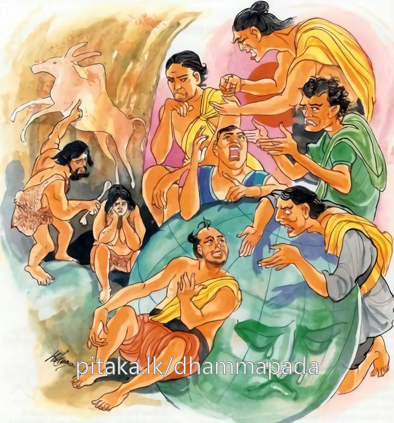
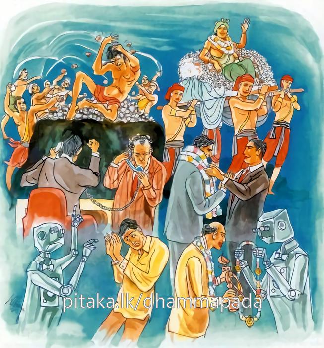
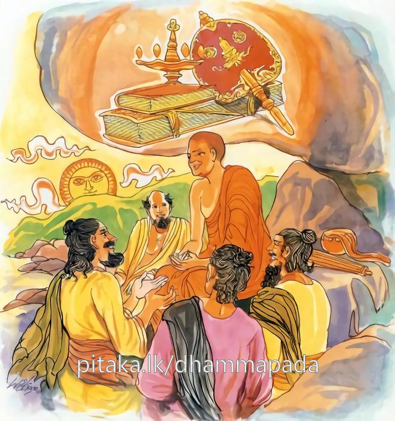

17-7 අතුල උපාසකගේ කථා පුවත
මෙම කතාව සද්ධර්ම සාගරයෙන් ද කියවන්න.
පොරාණමෙතං අතුල නෙතං අජ්ජතනාමිව
නින්දන්ති තුණ්හිමාසීනං නින්දන්ති බහුභාණිනං
මිතභාණිම්පි නින්දන්ති නත්ථි ලොකෙ අනින්දිතො.
අතුල ය, මේ ගැරැහුම් පැසැසුම් දෙක පුරාතන ය. මෙය අද පමණක් වූ දැයෙක් නො වේ. මුවෙන් නො බැණ උන්නවුනට ද නින්දා කෙරෙත්. බොහෝ කොට බණන සුල්ලන්ට ද නින්දා කෙරෙත්. මඳ කොට බණන සුල්ලහුට ද නින්දා කෙරෙති. (එහෙයින්) ලොවැ සර්වප්රකාරයෙන් අනින්දිත සත්ත්වයෙක් නම් නැති.

න චාහු න ච භවිස්සති න චෙතරහි විජ්ජති
එකන්තං නින්දිතො පොසො එකන්තං වා පසංසිතො.
ඒකාන්තයෙන් ගැරහුම් ලත් පුරුෂයෙක් හෝ ඒකාන්තයෙන් පසස්නා ලද පුරුෂයෙක් හෝ අතීතයෙහි ද නො වී ය. අනාගතයෙහි ද නො වන්නේ ය. දැන් වර්තමාන කාලයෙහි ද නැත්තේ ය.

යං චෙ විඤ්ඤූ පසංසන්ති අනුවිච්ච සුවෙ සුවෙ
අච්ඡිද්දවුත්තිං මෙධාවිං පඤ්ඤාසීලසමාහිතං.
ඉදින් නුවණැත්තෝ දවස දවස විමසා, නින්දාවට ද ප්රශංසාවට ද කාරණය දැන, යමකුට ප්රශංසා කෙරෙත් ද, අච්ඡිද්ර වූ ශික්ෂායෙහි පවත්නා (නොහොත් අච්ඡිද්ර ජීවිතවෘත්ති ඇති) ධර්මොජසප්රඥාව ඇති (විවසුන් නුවණ ඇති), ලොවිලොවුතුරා නුවණිනුත් සිවු පිරිසිදු ශීලයෙනුත් සමන්විත වූ,

නෙක්ඛං ජම්බොනදස්සෙව කො තං නින්දිතුමරහති
දෙවා’පි නං පසංසන්ති බ්රහ්මුනා’පි පසංසිතො.
ඒ මහණහට ජාම්බොනද කනකපුංජයකට මෙන් නින්දා කරන්නට කවරෙක් සුදුසු ද? ඒ මහණහට දෙවියෝද (නුවණැති මිනිස්සු ද) ප්රශංසා කෙරෙති. මහබඹුහු විසිනුදු හේ පසසන ලදුයේ ම වේ.
"පොරාණ මෙතං" යනු මේ ධර්ම දේශනය ශාස්තෲන් වහන්සේ සැවැත් නුවර ජේතවනාරාමයේ වැඩ සිටියදී අතුල නම් උපාසකවරයෙකු නිමිති කරගෙන දේශනා කළහ.
මොහු සැවත් නුවර වැසි උපාසකයෙකි. පන්සියයක් උපාසකවරු පිරිවර කොට ගෙන එක් දිනක් බණ ඇසීම සඳහා විහාරයට ගොස් රේවත තෙරුන් ළඟ බණ අසනු කැමතිව රේවත තෙරුන්ට වැඳ වාඩිවිය. උන්වහන්සේ සිහි නුවණින් යුතුව සිංහයෙක් මෙන් එකලාව හැසිරෙන කෙනෙකි. එනිසා ඔහු හා කිසිවක් කථා නොකළහ. තෙරුන් කිසිවක් කථා නොකළේයයි කිපී නැගිට සැරියුත් තෙරුන් වෙත ගොස් එකත් පසෙක වාඩිවිය.
සැරියුත් තෙරුන් විසින් කුමක් නිසා පැමිණියේ දැයි විමසුවිට ස්වාමීනි මට මේ උපාසකවරු රැගෙන ධර්ම දේශනයක් ඇසීම සඳහා රේවත තෙරුන් වෙත එළඹුනෙමි. උන්වහන්සේ මට කිසිවක් නොපැවසුහ. මම උන්වහන්සේ කෙරෙහි කිපී මෙහි පැමිණියෙමි. මට ධර්ම දේශනා කරන්නැයි පැවසුවිට එසේ නම් උපාසකවරුනි වාඩිවෙන්න බොහෝ කොට අභිධර්මය දේශනා කළහ. උපාසකවරු අභිධර්ම කථානම් තේරුම් ගැනීමට ඉතා අපහසුහුය. අපට මෙයින් කවර අර්ථයක්ද? අපට ඉන් ප්රයෝජනයක් නැතැයි කීය. පිරිස ගෙන ආනන්ද තෙරුන් වෙත ගියහ. උන්වහන්සේ විසින් ද උපාසකවරුන් කුමක් නිසා පැමිණිදැයි විමසුහ. ස්වාමීනි අපි ධර්මය ඇසීමට රේවත තෙරුන් වෙත ගියෙමු උන් වහන්සේ වචනයකුදු නො පැවසුහ. එනිසා කිපී සැරියුත් තෙරුන් වෙත ගියෙමු. උන්වහන්සේ බොහෝ කොට අභිධර්මය දේශනා කළහ. ඉන් අරුතක් නැතැයි කිපී මෙහි පැමිණියෙමු. ස්වාමීනි අපට දහම් දෙසන්නැයි ඉල්ලා සිටියහ. එසේ නම් වාඩි වන්න අසන්නැයි ඔවුන්ට ආනන්ද තෙරණුවෝ ඇසියයුතු වූ ධර්මයක් දේශනා කළහ. ඔවුන් ආනන්ද තෙරුන්ට ද කිපී බුදුන් වෙත ගොස් වැඳ එකත් පසෙක වාඩිවුහ. එහිදී බුදුහු උපාසකවරුනි ඔබ පැමිණියේ කුමක් නිසාදැයි විමසුහ. ධර්ම ශ්රවණය සඳහා යයි පැවසූහ. ඔබ ධර්මය ඇසුවේ දැයි විමසුහ. ස්වාමීනි අපි පළමුව රේවත හිමියන් වෙත ද අනතුරුව සැරියුත් තෙරුන් වෙත ද ඊට පසුව ආනන්ද තෙරුන් වෙත එළඹියෙමු. උන්වහන්සේ සුළු ප්රමාණයක් දෙසූහ. ඉන් කිපී අපි ඔබ වහන්සේ වෙත පැමිණියෙමු. බුදුහු ඔහුගේ කථාව අසා අතුල මෙය පෙර සිට පැමිණි දෙයෙකි. නිහඬව සිටින්නන්ට ද බොහෝ කථාකරන්නන්ට ද මද පමණට කථා කරන විට ද ගරහති. ඒකාන්තයෙන් ගැරහිය යුත්තන් ද ඒකාන්තයෙන් ප්රශංසා කරනු ලබන්නන් ද නැත. රජවරු ද ඇතැම් අය ගරහති ඇතැම් අය ප්රශංසා කරති. මහ පොළව ද සඳ හිරු දෙදෙනා ද එසේ නින්දා පැසසුම් ලබති. සිවු පිරිස මැද සිට ධර්මය දේශනා කරන බුදුන්ට ද ඇතැම් අය ගරහති සමහරු ප්රශංසා කරති. අඳබාල අයගේ නින්දාව හෝ ප්රසංසාව හෝ සැලකිය යුතු නොවේ. නැණවත් ප්රඥාවත් අයගේ නින්දාව නින්දාව නම් ඒ අයගේ ප්රශංසාව ද ප්රශංසාව නම් මෙයයි පවසා මේ ගාථාව දේශනා කළහ.
නින්දා නොලද කෙනෙකුන් තෙදියතේ නැත
හැමදා හොඳ නමම රැකගත් කෙනෙකු නැත
නින්දා පසංසා අටලෝ දහම මත
කැරකෙයි සදා කල් වෙනසක් නොවනු ඇත.
නුවණින් සීලයෙන් ගුණයෙන් අපරිමිත
තුන් බුදුවරුද මහණහු හා දමුණු සිත
සැලකුම් කරන මෙන් දඹරන් පිඩක වෙත
හිස බිම තබා දෙවි බඹවරු වඳිනු ඇත.
අතුල මෙය පෞරාණික ධර්මතාවයකි. නිහඩ අයට ද බොහෝ කථාකරන්නාට ද පමණට කථා කරන අයට ද නින්දා කරති. නින්දාවට ලක් නොවුවෙක් නම් මෙලොව නැත. ප්රශංසාව ලැබුවෙක් හෝ නින්දාව ලැබුවෙක් ඇති නොවීය. මතු ඇතිවන්නේද නැත. දැනුදු එවැන්නෙක් නැත.
යම් ප්රාඥයෙක් නිතර නිතර පැසසුම් ලබත් ද ප්රඥා ශීලයෙන් යුත් නුවණැත්තෝ පැසසුම් ලබත් සිදුරු රහිත වූ පැවැත්මෙන් ද විදසුන් නුවණින් හා ලොවි ලොවුතුරු නුවණින් ද සිවු පිරිසිදු ශීලයෙන් ද යුතු යමෙකුට නුවණැත්තෝ නින්දාවම හෝ පැසසුම යුතු කරුණු දිනපතා විමසාබලා පැසසුම් කෙරේද ජම්බුනද ස්වර්ණයෙන් කළ පළදනාවකට මෙන් ඒ පුද්ගලයට නින්දා කිරීමට හෝ කවරෙක් සමත් වේද? දෙවියෝ ද නුවණැති මිනිස්සු ද ඔහුට පැසසුම් කෙරෙති. හෙතෙමේ දෙව් මිනිසුන් තබා මහානුභාව සම්පන්න මහා බ්රහ්මයා විසින් ද පැසසුම් කරන ලද්දේය.
එහි පෝරාණමේතං - යනු පෞරාණික වූ අතුලං ඒ උපාසකයාට අමතයි. නෙතං අජ්ජතනාමිව ඉදං මෙය නින්දා කිරීම හෝ පැසසුම අද ඇතිවු දෙයක් නොවේ. තුණහිමාසිනං යනු ගොළුවෙක් බිහිරෙක් ලෙසට කිසිවක් නොදන්නා සේ නිහඬවී සිටිය ද ඔහුට නින්දා කරති. බහුභාණින්ති - සුළඟට සැලෙන තල්පතක් සේ තට තට ගා නිමක් නැති ලෙස කථා කරමින් සිටීමයි. එනිසාද නින්දා ලබයි. මිතභාණිපි මේ තැනැත්තා අමු රන් සේ තමන්ගේ වචන ගැන සිතමින් එකක් දෙකක් හෝ කියා නිහඩව සිටීයයි ඔහුටද නින්දා කරත්. මෙලෙස සියළු ආකාරයෙන් මෙලොව නින්ද නොලැබුවෙක් නම් නැත යන අරුතයි. නචාහු අතීතයේ ද නැතිවිය. අනාගතයේ ද ඇති නොවන්නේය. විඤ්ඤුති බාල අඥාන පුද්ගලයන්ගේ නින්දාව හෝ පැසසුම ප්රමාණය කොට නොගත යුතුය. යම් සේ පඩිවරු දිනපතා සොයාබලා නින්දා කිරීම හෝ ප්රශංසා කිරීම දැන ප්රශංසා කරත්. සිදුරු නොමැති බැවින් ජීවිත ක්රමයේ හෝ ශික්ෂාවෙන් සිදුරු නොමැති හෙයින් යුතු අය අච්ඡිද්දචුතති නින්දා කළ නොහැකිය. ධර්මය දත් නුවණින් යුත් අය මේධාවී නම් වේ. මේ නුවනැත්තා ලෞකික හෝ ලෝකෝත්තර ප්රඥාවෙන් ද චතුපාරිශුද්ධ සීලයෙන් ද යුතු නිසා පඤ්ඤාසීලසමාහිතා ඔහු පිරිසුදු රන් සේ ද ගැටීමට වැඩිමට හැකි ජම්බු නදියේ හටගත් රන් ආභරණයක් සේ කිසිවෙකුට නින්දා කිරීමට සුදුසු නොවේ. දෙවාපී - යනු දෙවියෝද නුවණැති මනුෂ්යයෝ ද එම භික්ෂුවට සතුටුවෙති. පස්සති බ්රහමුනා යනු දසදහසක් සක්වල බ්රහ්මයෝ ද මොහු පස්සති යන අරුතයි. දෙසුම අවසන ඒ පන්සියයක් උපාසකයෝ සෝවාන් ඵලයෙහි පිහිටියාහුය.